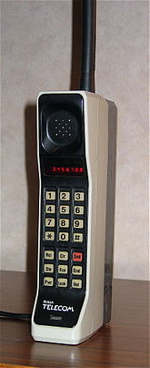
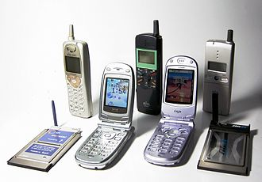

A mobile phone (or cellphone[a]) is a portable telephone that can make and receive calls over a radio frequency link while the user is moving within a telephone service area, as opposed to a fixed-location phone (landline phone). The radio frequency link establishes a connection to the switching systems of a mobile phone operator, which provides access to the public switched telephone network (PSTN). Modern mobile telephone services use a cellular network architecture and therefore mobile telephones are called cellphones (or "cell phones") in North America. In addition to telephony, digital mobile phones support a variety of other services, such as text messaging, multimedia messaging, email, Internet access (via LTE, 5G NR or Wi-Fi), short-range wireless communications (infrared, Bluetooth), satellite access (navigation, messaging connectivity), business applications, video games and digital photography. Mobile phones offering only basic capabilities are known as feature phones; mobile phones which offer greatly advanced computing capabilities are referred to as smartphones.
The first handheld mobile phone was demonstrated by Martin Cooper of Motorola in New York City on 3 April 1973, using a handset weighing c. 2 kilograms (4.4 lbs).[2] In 1979, Nippon Telegraph and Telephone (NTT) launched the world's first cellular network in Japan.[3] In 1983, the DynaTAC 8000x was the first commercially available handheld mobile phone. From 1983 to 2014, worldwide mobile phone subscriptions grew to over seven billion; enough to provide one for every person on Earth.[4] In the first quarter of 2016, the top smartphone developers worldwide were Samsung, Apple and Huawei; smartphone sales represented 78 percent of total mobile phone sales.[5] For feature phones (slang: "dumbphones") as of 2016, the top-selling brands were Samsung, Nokia and Alcatel.
A handheld mobile radio telephone service was envisioned in the early stages of radio engineering. In 1917, Finnish inventor Eric Tigerstedt filed a patent for a "pocket-size folding telephone with a very thin carbon microphone". Early predecessors of cellular phones included analog radio communications from ships and trains. The race to create truly portable telephone devices began after World War II, with developments taking place in many countries. The advances in mobile telephony have been traced in successive "generations", starting with the early zeroth-generation (0G) services, such as Bell System's Mobile Telephone Service and its successor, the Improved Mobile Telephone Service. These 0G systems were not cellular, supported few simultaneous calls, and were very expensive.
5G is a technology and term used in research papers and projects to denote the next major phase in mobile telecommunication standards beyond the 4G/IMT-Advanced standards. The term 5G is not officially used in any specification or official document yet made public by telecommunication companies or standardization bodies such as 3GPP, WiMAX Forum or ITU-R. New standards beyond 4G are currently being developed by standardization bodies, but they are at this time seen as under the 4G umbrella, not for a new mobile generation.
